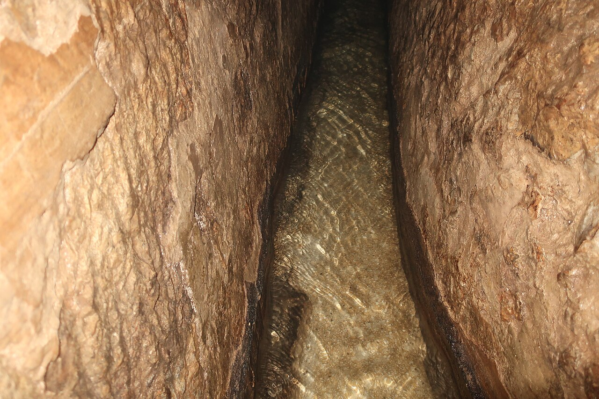

Hezekiah's Tunnel and Siloam Inscription

A 533-metre water tunnel cut through solid rock under Jerusalem, bringing the Gihon Spring's water inside the city to the Pool of Siloam. The Siloam Inscription, found in the tunnel in 1880, describes two crews digging from opposite ends and hearing each other's voices before breaking through.
Biblical Significance
Scripture credits Hezekiah with exactly this engineering work as he prepared for Sennacherib's siege. Walking the tunnel today, readers can literally stand inside a verse: God preserved Jerusalem in its crisis, and Hezekiah's faith-driven preparation still speaks of trusting God while doing the work He gives us.
Interpretations
Scholars agree the tunnel and its inscription are Hezekiah’s waterworks of c. 701 BC, matching 2 Kings 20:20; the inscription itself is now in Istanbul, with a replica at the tunnel.